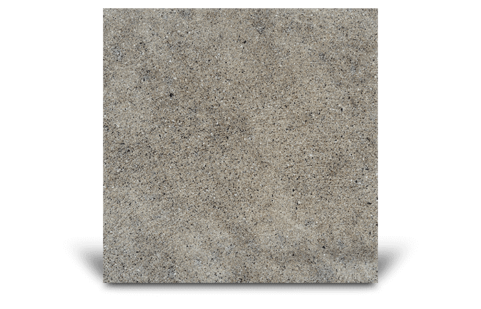
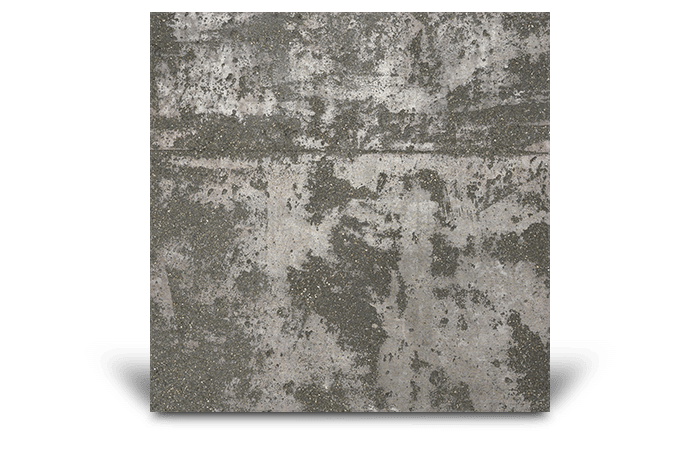

Medium Trowel
Textured finish for external residential concrete surfaces, ideal for patios and pool surrounds.

Sandstone
Textured finish for external residential concrete surfaces, ideal for patios and pool surrounds.

Texture Roll
Textured finish for external residential concrete surfaces, ideal for patios and pool surrounds.